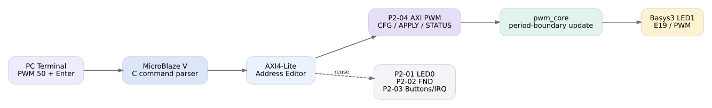

pwm_core · AXI Register Bank · IP Wrapper

pwm_core.v는 AXI를 모르며, Clock·Reset·설정값·APPLY·PWM 출력만 사용합니다. p2_04_axi_pwm_v1_0_S00_AXI.v는 CPU의 레지스터 접근을 담당합니다. p2_04_axi_pwm_v1_0.v는 Vivado IP Packager에서 인식시키는 최상위 인터페이스입니다.
설정 Shadow와 출력 Active를 분리
CPU가 CONFIG를 여러 번 쓰는 중에도 PWM 파형이 변경되어서는 안 됩니다. 0x0C APPLY 이후 pending이 설정되고, counter가 마지막 카운트에 도달할 때에만 active_period와 active_duty가 변경됩니다.
if (boundary) begin
counter <= 32'd0;
if (pending) begin
active_period <= shadow_period;
active_duty <= shadow_duty;
pending <= 1'b0;
end
endAXI4-Lite AW/W/B/AR/R 핸드셰이크
| 채널 | 이름 | 이번 RTL이 지키는 규칙 |
|---|---|---|
| AW | Write Address | AWVALID과 AWREADY가 동시에 참일 때 주소를 별도 버퍼에 저장 |
| W | Write Data | WVALID과 WREADY가 동시에 참일 때 데이터·WSTRB 저장 |
| B | Write Response | 주소·데이터가 모두 들어온 후 BRESP·BVALID. BREADY가 올 때까지 유지 |
| AR | Read Address | ARVALID과 ARREADY가 동시에 참일 때 주소 선택 |
| R | Read Data | RVALID 동안 RDATA·RRESP를 RREADY까지 보존 |
AW와 W는 어느 쪽이 먼저 도착해도 동작해야 합니다. 테스트벤치에서 양쪽 순서를 검사하도록 작성했습니다. 한 번에 하나의 쓰기 응답을 발행하는 단순 교육용 슬레이브입니다.
WSTRB와 슬레이브 오류 처리
WSTRB[3:0]는 데이터 32비트 중 어느 바이트를 실제로 기록할지 결정합니다. 예를 들어 WSTRB=4'b0001이면 하위 8비트만 갱신합니다.
for (byte_i=0;byte_i<4;byte_i=byte_i+1)
if (wstrb_hold[byte_i])
data_merged[8*byte_i +: 8] = wdata_hold[8*byte_i +: 8];알 수 없는 레지스터 주소 또는 PERIOD < 2, DUTY > PERIOD 상태의 APPLY는 SLVERR(2'b10)로 응답합니다.
LED1 단독 PWM 연결
wire [15:0] gpio_led;
wire p2_led0;
wire pwm_led1;
assign led = {gpio_led[15:2], pwm_led1, p2_led0};LED0은 제1장, LED1은 제4장 PWM, LED2~15는 기존 GPIO로 분리합니다. 사용자 Top은 이 연결 외에 PWM 비교·연산·상태 우선순위를 구현하지 않습니다.
독립 PWM Core 전체
실제 파일 열기 · 73줄
`timescale 1ns/1ps
// P2-04: 보드와 무관한 단일 채널 범용 PWM 코어.
// (추가) period와 duty는 클록 횟수 단위. 0%/100%는 지속 LOW/HIGH.
// (추가) 설정은 주기 마지막 경계에서만 활성값으로 반영.
module pwm_core #(
parameter [31:0] RESET_PERIOD = 32'd100000
)(
input wire clk,
input wire resetn,
input wire cfg_apply,
input wire [31:0] cfg_period,
input wire [31:0] cfg_duty,
input wire cfg_enable,
input wire cfg_polarity,
output wire pwm_out,
output reg pending,
output reg [31:0] active_period,
output reg [31:0] active_duty,
output reg active_enable,
output reg active_polarity
);
reg [31:0] counter;
reg [31:0] shadow_period;
reg [31:0] shadow_duty;
reg shadow_enable;
reg shadow_polarity;
wire boundary = (counter >= active_period - 32'd1);
wire duty_high = (counter < active_duty);
// (주의) enable=0이면 polarity와 관계없이 LOW로 차단.
// (설명) 기본 polarity에서 active_duty=0이면 항상 LOW,
// active_duty=active_period이면 항상 HIGH.
assign pwm_out = resetn && active_enable &&
(active_polarity ? !duty_high : duty_high);
always @(posedge clk) begin
if (!resetn) begin
counter <= 32'd0;
active_period <= RESET_PERIOD;
active_duty <= 32'd0;
active_enable <= 1'b0;
active_polarity <= 1'b0;
shadow_period <= RESET_PERIOD;
shadow_duty <= 32'd0;
shadow_enable <= 1'b0;
shadow_polarity <= 1'b0;
pending <= 1'b0;
end else begin
if (boundary) begin
counter <= 32'd0;
if (pending) begin
active_period <= shadow_period;
active_duty <= shadow_duty;
active_enable <= shadow_enable;
active_polarity <= shadow_polarity;
pending <= 1'b0;
end
end else begin
counter <= counter + 32'd1;
end
// (추가) 경계와 APPLY가 겹치면 새 값은 다음 경계에 적용.
// 여러 APPLY가 겹치면 최종 요청값을 우선하는 단일 Shadow 구조.
if (cfg_apply) begin
shadow_period <= cfg_period;
shadow_duty <= cfg_duty;
shadow_enable <= cfg_enable;
shadow_polarity <= cfg_polarity;
pending <= 1'b1;
end
end
end
endmodule
AXI4-Lite Slave 전체
실제 파일 열기 · 154줄
`timescale 1ns/1ps
// P2-04 AXI4-Lite 슬레이브: AW/W 주소·데이터 핸드셰이크를 독립 처리.
// AW와 W 각각 1개 버퍼, B/R 각각 1개 미완료 응답만 처리.
// WRITE 0x00 PERIOD_CFG, 0x04 DUTY_CFG, 0x08 CONTROL_CFG, 0x0C APPLY
// READ 0x10 STATUS, 0x14 ACTIVE_PERIOD, 0x18 ACTIVE_DUTY, 0x1C ID
// STATUS bit0 pending, bit8 active_enable, bit9 active_polarity.
module p2_04_axi_pwm_v1_0_S00_AXI #(
parameter integer C_S_AXI_DATA_WIDTH = 32,
parameter integer C_S_AXI_ADDR_WIDTH = 6
)(
input wire S_AXI_ACLK, input wire S_AXI_ARESETN,
input wire [C_S_AXI_ADDR_WIDTH-1:0] S_AXI_AWADDR,
input wire [2:0] S_AXI_AWPROT, input wire S_AXI_AWVALID,
output wire S_AXI_AWREADY,
input wire [C_S_AXI_DATA_WIDTH-1:0] S_AXI_WDATA,
input wire [(C_S_AXI_DATA_WIDTH/8)-1:0] S_AXI_WSTRB,
input wire S_AXI_WVALID, output wire S_AXI_WREADY,
output reg [1:0] S_AXI_BRESP, output reg S_AXI_BVALID,
input wire S_AXI_BREADY,
input wire [C_S_AXI_ADDR_WIDTH-1:0] S_AXI_ARADDR,
input wire [2:0] S_AXI_ARPROT, input wire S_AXI_ARVALID,
output wire S_AXI_ARREADY,
output reg [C_S_AXI_DATA_WIDTH-1:0] S_AXI_RDATA,
output reg [1:0] S_AXI_RRESP, output reg S_AXI_RVALID,
input wire S_AXI_RREADY,
output wire pwm_out
);
// (주의) 교육용 레지스터는 32비트, 4바이트 정렬.
// IP Packager에서 Data Width=32, Address Width>=6 적용.
localparam [1:0] OKAY = 2'b00, SLVERR = 2'b10;
localparam [31:0] RESET_PERIOD = 32'd100000;
localparam [31:0] IP_ID = 32'h00040001;
reg [31:0] period_cfg, duty_cfg, control_cfg;
reg apply_strobe;
wire pending;
wire [31:0] active_period, active_duty;
wire active_enable, active_polarity;
reg aw_hold, w_hold;
reg [C_S_AXI_ADDR_WIDTH-1:0] awaddr_hold;
reg [31:0] wdata_hold;
reg [3:0] wstrb_hold;
integer byte_i;
reg [31:0] data_merged;
pwm_core #(.RESET_PERIOD(RESET_PERIOD)) u_pwm_core (
.clk(S_AXI_ACLK), .resetn(S_AXI_ARESETN),
.cfg_apply(apply_strobe),
.cfg_period(period_cfg), .cfg_duty(duty_cfg),
.cfg_enable(control_cfg[0]), .cfg_polarity(control_cfg[1]),
.pwm_out(pwm_out), .pending(pending),
.active_period(active_period), .active_duty(active_duty),
.active_enable(active_enable), .active_polarity(active_polarity)
);
assign S_AXI_AWREADY = S_AXI_ARESETN && !aw_hold && !S_AXI_BVALID;
assign S_AXI_WREADY = S_AXI_ARESETN && !w_hold && !S_AXI_BVALID;
assign S_AXI_ARREADY = S_AXI_ARESETN && !S_AXI_RVALID;
// (추가) AXI 쓰기: AW/W 모두 수신 후 WSTRB 적용, BRESP 유지.
always @(posedge S_AXI_ACLK) begin
if (!S_AXI_ARESETN) begin
period_cfg <= RESET_PERIOD;
duty_cfg <= 32'd0;
control_cfg <= 32'd0;
apply_strobe <= 1'b0;
aw_hold <= 1'b0;
w_hold <= 1'b0;
awaddr_hold <= {C_S_AXI_ADDR_WIDTH{1'b0}};
wdata_hold <= 32'd0;
wstrb_hold <= 4'b0;
S_AXI_BVALID <= 1'b0;
S_AXI_BRESP <= OKAY;
end else begin
apply_strobe <= 1'b0;
if (S_AXI_AWVALID && S_AXI_AWREADY) begin
awaddr_hold <= S_AXI_AWADDR;
aw_hold <= 1'b1;
end
if (S_AXI_WVALID && S_AXI_WREADY) begin
wdata_hold <= S_AXI_WDATA;
wstrb_hold <= S_AXI_WSTRB;
w_hold <= 1'b1;
end
if (S_AXI_BVALID && S_AXI_BREADY)
S_AXI_BVALID <= 1'b0;
if (aw_hold && w_hold && !S_AXI_BVALID) begin
aw_hold <= 1'b0;
w_hold <= 1'b0;
S_AXI_BVALID <= 1'b1;
S_AXI_BRESP <= OKAY;
// (주의) 미정의/비정렬 주소는 저장하지 않고 SLVERR 응답.
case (awaddr_hold)
6'h00: begin
data_merged = period_cfg;
for (byte_i=0;byte_i<4;byte_i=byte_i+1)
if (wstrb_hold[byte_i])
data_merged[8*byte_i +: 8] = wdata_hold[8*byte_i +: 8];
period_cfg <= data_merged;
end
6'h04: begin
data_merged = duty_cfg;
for (byte_i=0;byte_i<4;byte_i=byte_i+1)
if (wstrb_hold[byte_i])
data_merged[8*byte_i +: 8] = wdata_hold[8*byte_i +: 8];
duty_cfg <= data_merged;
end
6'h08: begin
data_merged = control_cfg;
for (byte_i=0;byte_i<4;byte_i=byte_i+1)
if (wstrb_hold[byte_i])
data_merged[8*byte_i +: 8] = wdata_hold[8*byte_i +: 8];
control_cfg <= data_merged & 32'h00000003;
end
6'h0C: begin
if (wstrb_hold[0] && wdata_hold[0]) begin
if (period_cfg < 32'd2 || duty_cfg > period_cfg)
S_AXI_BRESP <= SLVERR;
else
apply_strobe <= 1'b1;
end
end
default: S_AXI_BRESP <= SLVERR;
endcase
end
end
end
// (추가) AXI 읽기: AR 별도 수신, RREADY 전까지 RDATA 유지.
always @(posedge S_AXI_ACLK) begin
if (!S_AXI_ARESETN) begin
S_AXI_RVALID <= 1'b0;
S_AXI_RRESP <= OKAY;
S_AXI_RDATA <= 32'd0;
end else begin
if (S_AXI_RVALID && S_AXI_RREADY)
S_AXI_RVALID <= 1'b0;
if (S_AXI_ARVALID && S_AXI_ARREADY) begin
S_AXI_RVALID <= 1'b1;
S_AXI_RRESP <= OKAY;
case (S_AXI_ARADDR)
6'h00: S_AXI_RDATA <= period_cfg;
6'h04: S_AXI_RDATA <= duty_cfg;
6'h08: S_AXI_RDATA <= control_cfg;
6'h0C: S_AXI_RDATA <= 32'd0; // APPLY는 쓰기 명령; 읽으면 0.
6'h10: S_AXI_RDATA <= {22'd0,active_polarity,active_enable,7'd0,pending};
6'h14: S_AXI_RDATA <= active_period;
6'h18: S_AXI_RDATA <= active_duty;
6'h1C: S_AXI_RDATA <= IP_ID;
default: begin S_AXI_RDATA <= 32'd0; S_AXI_RRESP <= SLVERR; end
endcase
end
end
end
endmodule
사용자 IP Top 전체
실제 파일 열기 · 41줄
`timescale 1ns/1ps
// User-IP boundary: one PWM channel + standard AXI4-Lite slave.
module p2_04_axi_pwm_v1_0 #(
parameter integer C_S00_AXI_DATA_WIDTH = 32,
parameter integer C_S00_AXI_ADDR_WIDTH = 6
)(
output wire pwm_led_o,
input wire s00_axi_aclk, input wire s00_axi_aresetn,
input wire [C_S00_AXI_ADDR_WIDTH-1:0] s00_axi_awaddr,
input wire [2:0] s00_axi_awprot, input wire s00_axi_awvalid,
output wire s00_axi_awready,
input wire [C_S00_AXI_DATA_WIDTH-1:0] s00_axi_wdata,
input wire [(C_S00_AXI_DATA_WIDTH/8)-1:0] s00_axi_wstrb,
input wire s00_axi_wvalid, output wire s00_axi_wready,
output wire [1:0] s00_axi_bresp, output wire s00_axi_bvalid,
input wire s00_axi_bready,
input wire [C_S00_AXI_ADDR_WIDTH-1:0] s00_axi_araddr,
input wire [2:0] s00_axi_arprot, input wire s00_axi_arvalid,
output wire s00_axi_arready,
output wire [C_S00_AXI_DATA_WIDTH-1:0] s00_axi_rdata,
output wire [1:0] s00_axi_rresp, output wire s00_axi_rvalid,
input wire s00_axi_rready
);
p2_04_axi_pwm_v1_0_S00_AXI #(
.C_S_AXI_DATA_WIDTH(C_S00_AXI_DATA_WIDTH),
.C_S_AXI_ADDR_WIDTH(C_S00_AXI_ADDR_WIDTH)
) u_axi (
.S_AXI_ACLK(s00_axi_aclk), .S_AXI_ARESETN(s00_axi_aresetn),
.S_AXI_AWADDR(s00_axi_awaddr), .S_AXI_AWPROT(s00_axi_awprot),
.S_AXI_AWVALID(s00_axi_awvalid), .S_AXI_AWREADY(s00_axi_awready),
.S_AXI_WDATA(s00_axi_wdata), .S_AXI_WSTRB(s00_axi_wstrb),
.S_AXI_WVALID(s00_axi_wvalid), .S_AXI_WREADY(s00_axi_wready),
.S_AXI_BRESP(s00_axi_bresp), .S_AXI_BVALID(s00_axi_bvalid),
.S_AXI_BREADY(s00_axi_bready),
.S_AXI_ARADDR(s00_axi_araddr), .S_AXI_ARPROT(s00_axi_arprot),
.S_AXI_ARVALID(s00_axi_arvalid), .S_AXI_ARREADY(s00_axi_arready),
.S_AXI_RDATA(s00_axi_rdata), .S_AXI_RRESP(s00_axi_rresp),
.S_AXI_RVALID(s00_axi_rvalid), .S_AXI_RREADY(s00_axi_rready),
.pwm_out(pwm_led_o)
);
endmodule
Basys3 사용자 Shell 전체
실제 파일 열기 · 28줄
// P2-04 Top은 보드 연결만 담당. PWM 계산 및 always 기능 로직 금지.
// (유지) LED0은 01장 IP, LED14/15는 기존 GPIO UART/Timer.
// (추가) LED1(E19)은 PWM 전용으로 분리하며 GPIO bit1은 외부핀에서 제외.
// (유지) FND는 02장, 방향버튼은 03장, BTNC는 Reset.
module basys3_soc11_top (
input wire clk, input wire btnC,
input wire btnU, input wire btnD, input wire btnL, input wire btnR,
input wire [15:0] sw, output wire [15:0] led,
input wire RsRx, output wire RsTx,
output wire [6:0] seg, output wire [3:0] an, output wire dp
);
wire [15:0] gpio_led;
wire p2_led0;
wire pwm_led1;
// 단순 연결: [15:2] GPIO, bit1 PWM, bit0 LED IP.
assign led = {gpio_led[15:2], pwm_led1, p2_led0};
// BD에 pwm_led1 외부 포트를 만든 후에 Wrapper를 재생성해야 한다.
soc11_integration_wrapper u_soc11 (
.clk(clk), .btnC(btnC),
.btnU(btnU), .btnD(btnD), .btnL(btnL), .btnR(btnR),
.sw_tri_i(sw), .led_tri_o(gpio_led),
.UART_0_rxd(RsRx), .UART_0_txd(RsTx),
.p2_led_o(p2_led0), .pwm_led1(pwm_led1),
.fnd_seg(seg), .fnd_an(an), .fnd_dp(dp)
);
endmodule
PWM Core 테스트벤치 전체
실제 파일 열기 · 64줄
`timescale 1ns/1ps
module tb_pwm_core;
reg clk = 0;
always #5 clk = ~clk;
reg resetn = 0, cfg_apply = 0, cfg_enable = 0, cfg_polarity = 0;
reg [31:0] cfg_period = 10, cfg_duty = 0;
wire pwm_out, pending;
wire [31:0] active_period, active_duty;
wire active_enable, active_polarity;
integer high, i;
pwm_core #(.RESET_PERIOD(10)) dut (
.clk(clk), .resetn(resetn), .cfg_apply(cfg_apply),
.cfg_period(cfg_period), .cfg_duty(cfg_duty),
.cfg_enable(cfg_enable), .cfg_polarity(cfg_polarity),
.pwm_out(pwm_out), .pending(pending),
.active_period(active_period), .active_duty(active_duty),
.active_enable(active_enable), .active_polarity(active_polarity)
);
task apply_cfg;
input [31:0] p,d;
input en,pol;
begin
@(negedge clk);
cfg_period=p; cfg_duty=d; cfg_enable=en; cfg_polarity=pol;
cfg_apply=1;
@(negedge clk); cfg_apply=0;
end
endtask
task count_two_periods;
input integer expected;
begin
// Wait for pending request to reach the active registers.
wait (pending == 0);
@(negedge clk);
if (active_period !== 10) $fatal(1,"wrong period");
high=0;
for (i=0;i<20;i=i+1) begin
if (pwm_out) high=high+1;
@(negedge clk);
end
if (high !== expected) $fatal(1,"high count actual=%0d expected=%0d",high,expected);
end
endtask
initial begin
repeat(3) @(negedge clk);
if (pwm_out !== 1'b0) $fatal(1,"reset output not low");
resetn=1;
apply_cfg(10,0,1,0); count_two_periods(0);
apply_cfg(10,5,1,0);
if (pending && active_duty !== 0) $fatal(1,"mid-cycle glitch / duty early update");
count_two_periods(10);
apply_cfg(10,10,1,0); count_two_periods(20);
apply_cfg(10,0,0,0); count_two_periods(0);
apply_cfg(10,5,1,1); count_two_periods(10);
apply_cfg(10,0,0,1); count_two_periods(0); // disable dominates polarity
resetn=0;
repeat(2) @(negedge clk);
if (pwm_out !== 0 || pending !== 0 || active_duty !== 0)
$fatal(1,"reset failed");
$display("RTL_SIM_pwm_core PASS (0/50/100%%, polarity, enable, reset, boundary)");
$finish;
end
initial begin #100000; $fatal(1,"TIMEOUT"); end
endmodule
AXI·PWM 테스트벤치 전체
실제 파일 열기 · 120줄
`timescale 1ns/1ps
module tb_p2_04_axi_pwm;
reg clk = 0;
always #5 clk = ~clk;
reg resetn=0;
reg [5:0] awaddr=0, araddr=0;
reg [2:0] awprot=0, arprot=0;
reg awvalid=0, wvalid=0, bready=0, arvalid=0, rready=0;
reg [31:0] wdata=0;
reg [3:0] wstrb=4'hF;
wire awready,wready,bvalid,arready,rvalid,pwm_led_o;
wire [1:0] bresp,rresp;
wire [31:0] rdata;
reg [31:0] read_value;
integer high, i;
p2_04_axi_pwm_v1_0 #(.C_S00_AXI_ADDR_WIDTH(6)) dut (
.pwm_led_o(pwm_led_o), .s00_axi_aclk(clk), .s00_axi_aresetn(resetn),
.s00_axi_awaddr(awaddr), .s00_axi_awprot(awprot),
.s00_axi_awvalid(awvalid), .s00_axi_awready(awready),
.s00_axi_wdata(wdata), .s00_axi_wstrb(wstrb),
.s00_axi_wvalid(wvalid), .s00_axi_wready(wready),
.s00_axi_bresp(bresp), .s00_axi_bvalid(bvalid), .s00_axi_bready(bready),
.s00_axi_araddr(araddr), .s00_axi_arprot(arprot),
.s00_axi_arvalid(arvalid), .s00_axi_arready(arready),
.s00_axi_rdata(rdata), .s00_axi_rresp(rresp),
.s00_axi_rvalid(rvalid), .s00_axi_rready(rready)
);
task axi_write;
input [5:0] a;
input [31:0] d;
input [3:0] strb;
input integer w_first;
input [1:0] expected_resp;
begin
// Separate AW/W by several cycles, test each arrival order.
@(negedge clk);
if (w_first) begin
wdata=d; wstrb=strb; wvalid=1;
do @(posedge clk); while (!wready);
@(negedge clk); wvalid=0;
repeat(3) @(negedge clk);
awaddr=a; awvalid=1;
do @(posedge clk); while (!awready);
@(negedge clk); awvalid=0;
end else begin
awaddr=a; awvalid=1;
do @(posedge clk); while (!awready);
@(negedge clk); awvalid=0;
repeat(3) @(negedge clk);
wdata=d; wstrb=strb; wvalid=1;
do @(posedge clk); while (!wready);
@(negedge clk); wvalid=0;
end
wait(bvalid);
repeat(2) @(negedge clk);
if (bvalid !== 1 || bresp !== expected_resp) $fatal(1,"write response");
bready=1;
@(negedge clk); bready=0;
end
endtask
task axi_read;
input [5:0] a;
input [1:0] expected_resp;
begin
@(negedge clk); araddr=a; arvalid=1;
do @(posedge clk); while (!arready);
@(negedge clk); arvalid=0;
wait(rvalid);
repeat(2) @(negedge clk);
if (rvalid !== 1 || rresp !== expected_resp) $fatal(1,"read response");
read_value=rdata;
rready=1;
@(negedge clk); rready=0;
end
endtask
initial begin
repeat(3) @(negedge clk); resetn=1;
axi_read(6'h1C,2'b00);
if(read_value!==32'h00040001) $fatal(1,"IP ID mismatch");
axi_write(6'h00,32'd10,4'hF,1,2'b00); // W first
axi_write(6'h04,32'd5,4'hF,0,2'b00); // AW first
axi_write(6'h08,32'd1,4'hF,1,2'b00);
// WSTRB[3] must not overwrite lowest control byte.
axi_write(6'h08,32'h00000000,4'h8,0,2'b00);
axi_read(6'h08,2'b00);
if(read_value!==32'd1) $fatal(1,"WSTRB failed");
axi_write(6'h0C,32'd1,4'h1,0,2'b00);
// 최초 활성 주기는 RESET_PERIOD=100000이다. APPLY는 현재 주기 경계에서
// 반영되므로 그 경계를 지난 뒤 ACTIVE 값을 읽는다.
repeat(100010) @(negedge clk);
axi_read(6'h14,2'b00); if(read_value!==10) $fatal(1,"active period");
axi_read(6'h18,2'b00); if(read_value!==5) $fatal(1,"active duty");
high=0;
for (i=0;i<20;i=i+1) begin
@(negedge clk); if(pwm_led_o) high=high+1;
end
if(high!==10) $fatal(1,"PWM duty 50%%: high=%0d",high);
// Duty must not exceed period: APPLY yields SLVERR.
axi_write(6'h04,32'd11,4'hF,0,2'b00);
axi_write(6'h0C,32'd1,4'h1,0,2'b10);
axi_read(6'h18,2'b00); if(read_value!==5) $fatal(1,"invalid apply altered duty");
axi_read(6'h3C,2'b10);
axi_write(6'h3C,32'd0,4'hF,0,2'b10);
// Restore duty=100% and then duty=0%; output should be DC high/low.
axi_write(6'h04,32'd10,4'hF,0,2'b00);
axi_write(6'h0C,32'd1,4'hF,0,2'b00);
repeat(20) @(negedge clk);
for(i=0;i<20;i=i+1) begin
@(negedge clk); if(pwm_led_o!==1) $fatal(1,"100 percent DC");
end
axi_write(6'h04,32'd0,4'hF,0,2'b00);
axi_write(6'h0C,32'd1,4'hF,0,2'b00);
repeat(20) @(negedge clk);
for(i=0;i<20;i=i+1) begin
@(negedge clk); if(pwm_led_o!==0) $fatal(1,"0 percent DC");
end
$display("RTL_SIM_p2_04_axi_pwm PASS (AW/W order, WSTRB, B/R backpressure, errors, PWM)");
$finish;
end
initial begin #2000000; $fatal(1,"TIMEOUT"); end
endmodule
LED1 핀 중복방지 참고
실제 파일 열기 · 5줄
# P2-04: LED1 already constrained in the original 16-LED XDC.
# DO NOT add this pair again if led[1] is already assigned.
# Reference only: Digilent Basys-3-Master.xdc
# set_property PACKAGE_PIN E19 [get_ports {led[1]}]
# set_property IOSTANDARD LVCMOS33 [get_ports {led[1]}]